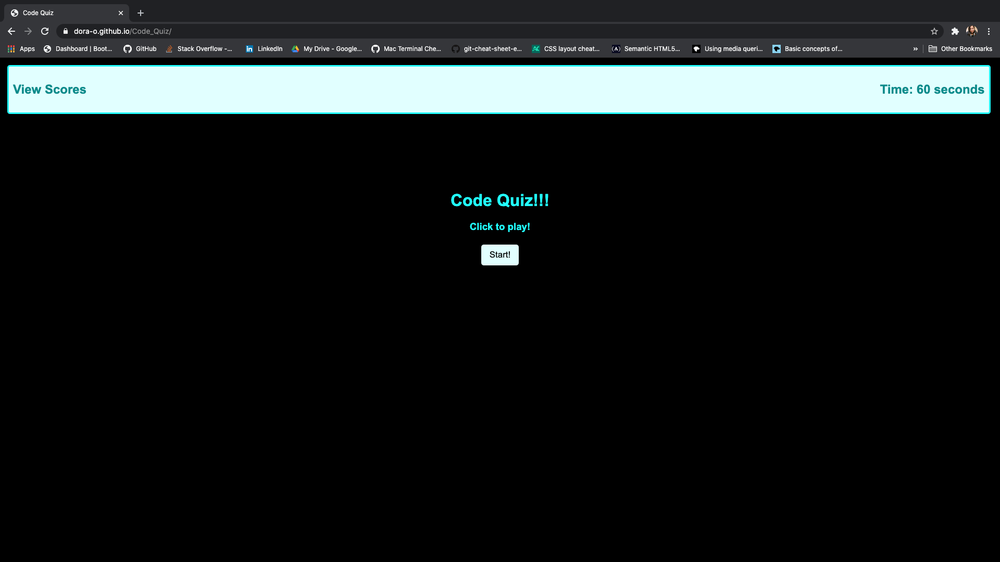
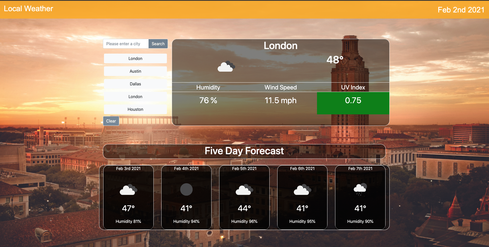

Projects
Avengers Unite

Created an app that allows the user create their own hero lineup with Marvel characters.
User is given a search bar so that they can search for a Marvel character.
User is given the character name, the bio (if said hero has one listed in the Marvel API ie Gambit does
not), an image of said hero, and any movies/shows the character has been in.
User is presented with a save button that allows them to save up to six characters for their hero
lineup.
The hero lineup will show the characters images.
If the user searches for a hero not found in the Marvel API (ie She-Hulk, Ant-Man etc) or it is not a
character in the Marvel universe they will get a notification saying said character could not be found
and/or verify the name was spelled exaclty how Marvel spells it.
HTML, CSS, JavaScript and Bulma were used for the application.
Avengers Unite Repo!
Code Quiz

Created a time quiz that asks the user questions about HTML, CSS and JavaScript.
The application itself was created with HTML, CSS and JavaScript.
User has sixty seconds to answer ten questions.
For every question that the user gets correct, they get ten points added to their score.
For every question the user gets incorrect, five points get deducted from score as well as five seconds deducted from timer.
User will also see an alert box appear for every correct/incorrect answer.
After timer reaches zero or user has answered all ten questions; a prompt will appear to capture the user's initials so that the score can be saved.
Prompt will also appear if time tries to go below zero after many incorrect answers. After user inputs initials, the screen will show how many points the user
got.
User is then able to click on "View Scores" and see all locally saved users with their scores.
Code Quiz Repo!
Weather Dashboard

Created an app that allows the user to see the weather outlook for multiple cities so that they can plan
accordingly.
User is given a dashboard with forms of input so that they can search for a city with current and future
weather conditions.
User is given the city name, the date, an icon representation of weather conditions, the temperature,
the humidity the wind speed and the UV index.
When viewing the index the user is presented with a color that indicates whether the conditions are
favorable, moderate or severe.
User is presented with 5 day forecasts that display the date, an icon of representation of weather
conditions, temperature and humidity when viewing future weather conditions for city they choose.
UV Index colors: favorable will be green, moderate will be yellow/orange and severe will be red/purple.
Application will save the five most recent searches.
User is able to click on a city in the search history and presented with previous information of
weather.
HTML, CSS, JavaScript and bootstrap were used for application.
Weather Dashboard Repo!